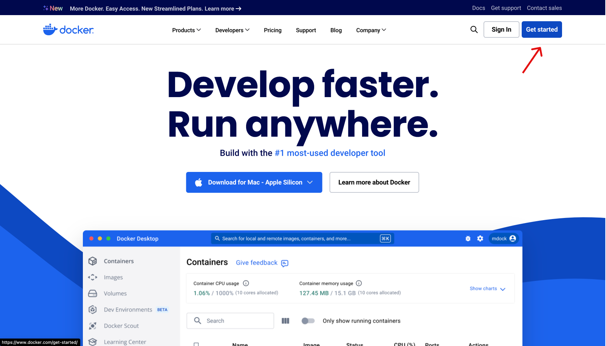
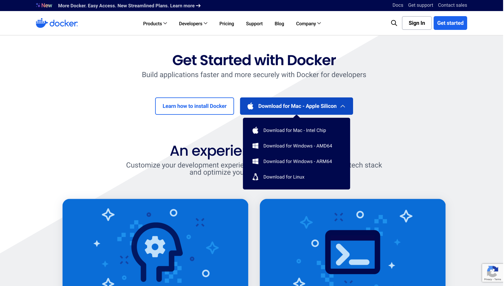
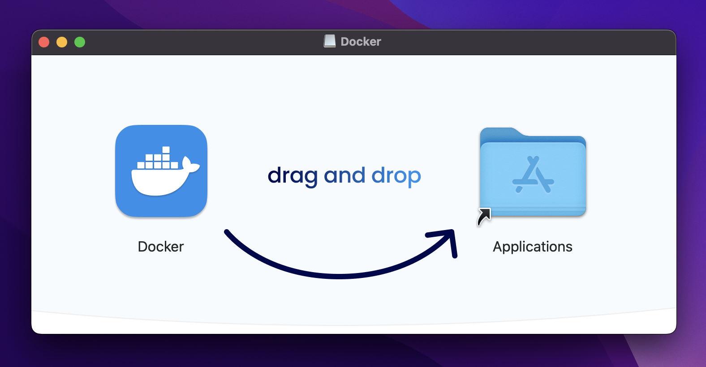
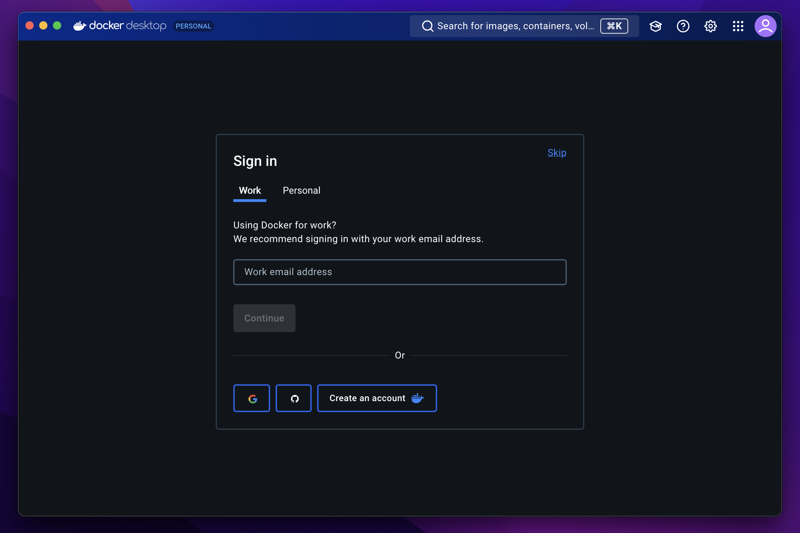
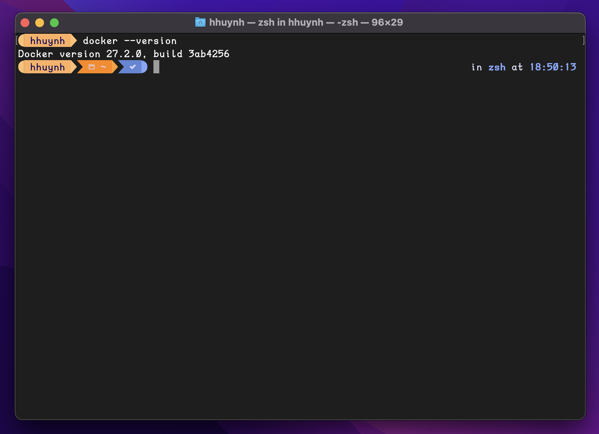
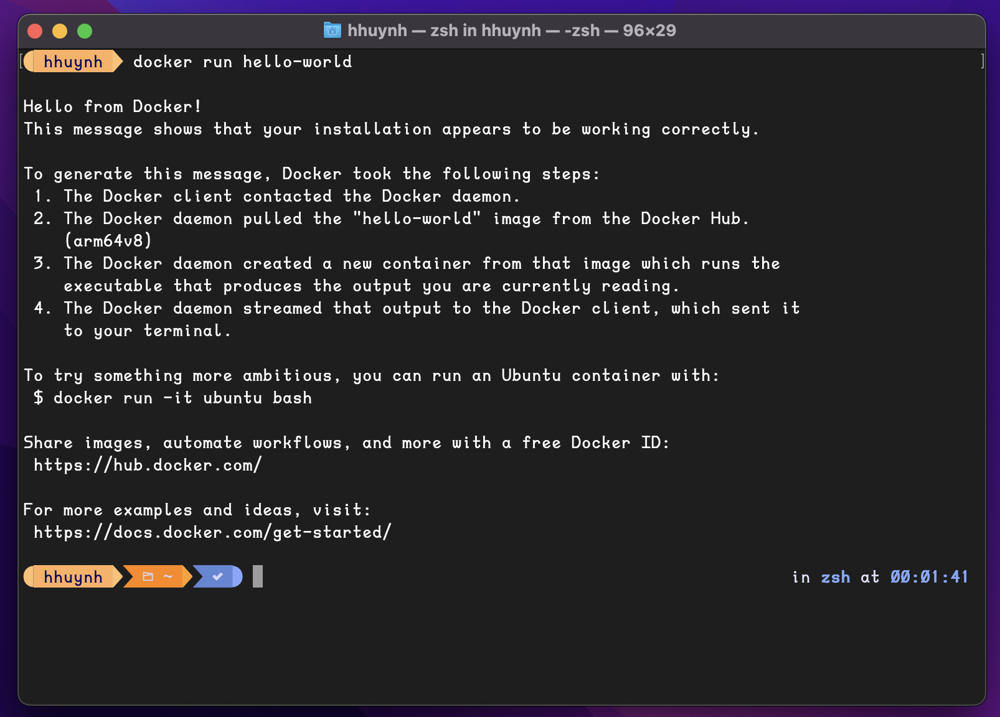
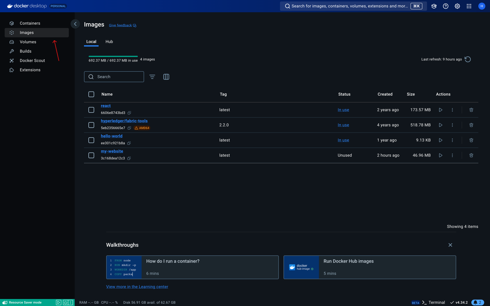
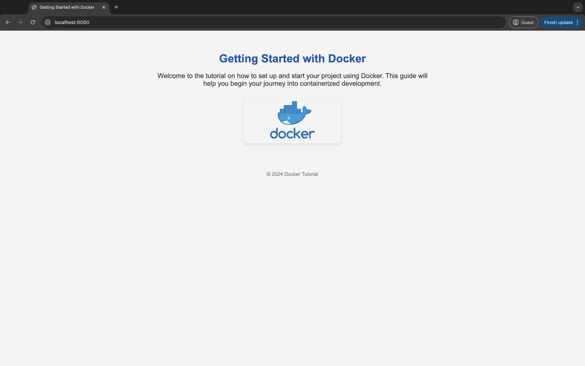

A Guide to Start Your Project with Docker
Step 1: Installing Docker on Your Mac
1. Download Docker Desktop for Mac:
- Go to Docker Website
- Click on “Get Started” 
2. Install Docker Desktop:
 - Open the downloaded .dmg file. - Drag the Docker icon to the Applications folder to install it.  - Open Docker from your Applications folder. - You may be prompted to enter your email, so follow the on-screen instructions. 
3. Verify the Installation:
Open a terminal and type the following command to check if Docker is installed correctly:
docker --version

4. Run a Test Container:
To ensure Docker is functioning properly, run a simple container like “Hello World”:
docker run hello-worldThis command will download a test image and run it, outputting a message that confirms Docker is installed and working. 
If you run a Docker command like
docker run hello-worldfor the first time and see a message saying, “Unable to find the image locally”, don’t worry! This just means the image isn’t on your machine yet.Docker will automatically start downloading the image from Docker Hub. Once the image is downloaded, it will run.
Step 2: Selecting a Base Image for Your Website
When building a website using Docker, selecting the right base image is crucial. The base image provides the underlying operating system and the necessary software components.
The choice of a base image depends on the needs of your project. Here are some common scenarios and the recommended base images:
Before you proceed, make sure you have the static files (HTML, CSS, JavaScript) for your website ready in a folder. This folder will also be where you create your Dockerfile.
1. Static Websites
- Nginx: Ideal for serving static content such as HTML, CSS, and JavaScript.
- Use
nginx:alpinefor a lightweight, secure, and efficient static web server.
Create a Dockerfile
- Create a txt file and paste the the lines below
FROM nginx:latest
COPY ./my-folder/index.html /usr/share/nginx/html/
COPY ./my-folder/styles.css /usr/share/nginx/html/
COPY ./my-folder/script.js /usr/share/nginx/html/- Save the file as Dockerfile in the root of your project directory where your website files are located (e.g., HTML, CSS, JavaScript files).
Build the Docker Image Using Command Line:
Open a terminal or command prompt.
Navigate to the directory where your - Dockerfile is located.
Run the following command to build the Docker image:
docker build -t my-website .
You can replace
my-websitewith any name you prefer for your Docker image
Run the Docker Container
Once the image is built, run it by typing:
docker run -d -p 8080:80 my-websiteVerify the container is running
Run the following command to ensure your container is up and running:
docker psAccess the Website
Now, go to your browser and visit
http://localhost:8080to see your website.

Building a Docker Image Using Docker Desktop
Open Docker Desktop
Launch Docker Desktop on your machine. Ensure it is running by checking for the Docker icon in your system tray (Windows) or menu bar (macOS).
Step 4: Build Image
- At the top of the Images screen, you will find an option to Build Image. Click on this button.
- A dialog box will appear asking you to specify the path to the Dockerfile and the context. The context is typically the path to the directory containing your Dockerfile and other files it refers to.
- You will also need to enter a tag for your image in the format
name:tag(e.g.,my-website:latest). If you don’t specify a tag, Docker will automatically tag the image aslatest.
Step 5: Start the Build
- After setting the Dockerfile path, context, and tag, click on the Build button in the dialog box.
- Docker Desktop will start the build process, and you can view the progress in the interface. You will see logs that are similar to what you would get in the terminal, giving you insight into the build steps being executed.
Step 6: Verify the Build
- Once the build is complete, your new image will appear in the Images list in Docker Desktop.
- You can now use this image to run containers, just as you would with an image built via the command line.